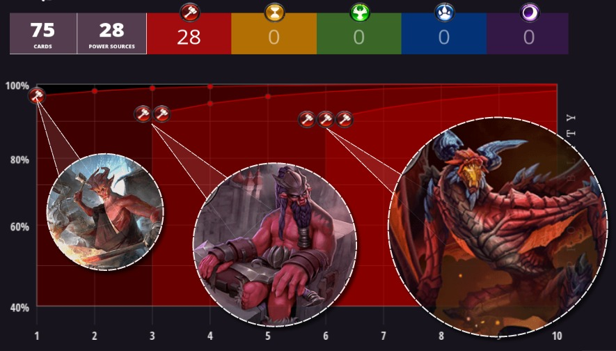

The popular streamer, competitor and maverick deck builder spoke to Shiftstoned on the heels of her recent first-place finish at the ECL Tuesday Weekly event.
Science, community and the healing power of games are just a few of the topics that emerge from our conversation about Power bases in Eternal, A Strategy Card Game.
Although she is known for experimentation, her tournament victories have demonstrated that she can also be a real competitive threat.
Most recently, she has been spotted spearheading the launch of The Eternal Post, a new content source for Eternal players.
Kaelos, the decks you construct are often surprising, unique and unexpected. What motivates and inspires you when deckbuilding?
Kaelos:
In my former life I was a scientist. When I got sick and lost a lot of my cognitive abilities (like reading), I discovered it wasn’t being smart that made me a scientist—it was being curious and undeterred by failure.
I was a workaholic stuck in a bed. And when I started playing Eternal…it was a complex and interesting enough system that I could science it. It was a way to do something I missed and needed.
Looking for novel card interactions and synergies is a huge facet of that, and one that points me toward other questions of mechanics, game design, and player behavior.

When you are streaming, do your viewers have any particular expectations about what types of decks they will see be seeing?
Kaelos:
They get pretty upset when I play anything approaching mainstream.
Granted, that’s probably why I have like ten viewers. After a year of modeling things, making videos, creating new decks, and participating in tournaments.
The “undeterred by failure” part is important because to find the really good stuff you have to either fail a lot or take ideas from other people.
And the latter isn’t really a challenge for me. My viewers get that, but it isn’t what a lot of people want to see. They want to see someone crushing with a meta deck every night. Which I’m capable of, but would bore me to tears.
Bring that brain back
How important is it to you that you win with your own brew?
Kaelos:
Incredibly important. I don’t play to win, I play for my wins to have worth.
I love my viewers, but I don’t play for other people. I’m always there to self-validate, not measure myself against others.
What sort of reactions have you received from the Eternal community at large?
Kaelos:
This is kind of a difficult subject because the response is mainly disinterest or telling me what I can’t do, and that I’m not good enough.
I’ve had a few really constant and vocal supporters, and they mean more than I can say.
Because without the support network this community gave me, I would never have recovered as much as I have—much less succeeded so well at a new game in the process of getting my brain back.


Reprobates is a tournament-winning update to an earlier deck that you played in tbe Stranglecat Open during the Dusk Road period.
It seems to have gained a lot from the Fall of Argenport: Ixtun Merchant, Jekk Lone Gun and even Wyatt, Junk Collector are all new additions.
Notably you decided to include a nearly full contingent of Standards, a new Power card type introduced with the latest expansion.
We've seen other examples of decks that take advantage of these Transmute effects. What do the Standards add to this list in particular?
Kaelos:
Without the Shugo Standards, I don’t think this deck stands a chance competitively anymore.
There are just too many Time fatties coming down left and right for my units to be capable of pushing through damage without Overwhelm or big combat tricks [ie: offensive Fast Spells]. And Shugo Tactic provides both.

So running lots of Standards is only an issue if I have too much Depleted power out of the gate.
The main consideration is balancing Power cards that perform neat tricks or support your deck in other ways versus getting enough non-depleted power to play things on curve...which is pretty essential for an Aggro deck.
It can take some work to find that balance.
Kaelos:
Right. You can see when I run the variant of this list that has Rapid Shot rather than Wyatt, I’ll take out the Cabal Standards completely just to increase my odds of activated Power.
Even in the version that won the tournament, I went down to three Standards to increase my chances of activated Power while preserving the odds of hitting one Cabal Tactic in the game. Without more additional draw, it takes about three of any given card for decent odds of hitting at least one in a match of typical length.
Lastly, you’ll notice I didn’t include any Seats to make up for all the other depleted “added utility” power I was running in the form of Standards and Crests.
Yes, Seat of Chaos is noticeably absent...
Kaelos:
I don’t run Seats in Midrange Aggro decks unless I’m really desperate for Influence out of the gate. Because they’re typically useless after about Turn 3 or 4 in terms of helping you play on curve. Whereas all the other power types retain utility or come in non-depleted.
Looking at the Influence Chart, there appear to be very low chances of drawing enough Influence to hit

 Kaelos:
Kaelos:Can we be honest here? I was brain-dead and forgot to include Common Cause, which usually makes those odds a whole lot better in a tribal deck.
Hahaha, I'm sure the readers will appreciate your honesty. And Common Cause does make a lot of sense here, since all but one of the units are Gunslingers.
You happily remembered to include Common Cause in your previous version of this deck. How did this more recent list handle differently without that key Power card?
Kaelos:
I thought I was going to die nearly every game.

Shiftstoned: The first time you brought Reprobates to a tournament, it was a limited Tribal format that required a minimum number of units to share a type.
What made you decide to stick with Gunslinger tribal for the the Eternal Community League event?
Kaelos:
Slingers is just my go-to when I need to test myself or the meta rather than the deck. Because it’s the deck that makes the most sense to my brain. I could pilot it in my sleep.
This was the first tournament I’d played to win since about a month or two prior when I made Top 8 in the Eternal Tournament Series with the Oni Swarm deck. So I needed to get a good gauge of where my own play was.
I spend so much time testing unconventional decks and interactions, but Slingers is the deck that lets me test myself instead.
Compare that to a week later… we launched the Eternal Post that day and I may have gone for a celebratory drunkstream.



More on the Eternal Post in a bit, but speaking of Oni Swarm....what inspired you to bring a single-faction Oni Tribal deck to an Eternal Touranment Series competition?
Kaelos:
I built this deck originally as a challenge to make mono-Fire viable. And it was a pretty significant challenge, because going into another color for even one or two key cards really strengthens most decks.
The Influence Chart looks much different when all your cards are one color: Ninety percent or better to draw
Kaelos:
When you're playing Mono decks, having that kind of power base is amazing because it means you can choose the “substantial reward” cards without accepting the concurrent risk.
You can almost tell where the game developers think “faction identity” in any given faction lies by looking at which cards have the highest single-color Influence requirements. Without those restrictions, mono decks wouldn't stand a chance.
But on the other hand you take a different risk instead, and one that's much more difficult to calculate: for every faction, at every power cost, there is likely to be another faction that has a better (or situationally-better) card. You mitigate that when you play multi-faction decks because you're gaining access to one or more of those “better” cards.
Shiftstoned:
Did you need to think much about constructing a mono-Fire Power base, or did it just kind of build itself?
 Kaelos:
Kaelos:I would say that Mono decks are easier to build, but they're much more difficult to make viable.
So I thought about the Power base in that I knew I’d only be able to play one color, and I had to make it count.
The Kaleb’s Favors were added just because I needed slightly more consistency. Making absolutely sure I could play my hand on-curve, without sacrificing more slots for units or weapons than I absolutely had to. And we wanted to get the extra two face damage rather than just subbing in more sigils.
Four copies of Granite Waystone also seems like a solid choice in a mono-Faction deck.
Kaelos:
There’s no reason not to include a Power that comes in non-Depleted with a perk. Free chumps with no downside, if you’re not looking for Seat activation.
Shiftstoned:
Did you do much testing with this deck before you brought it to the tournament?
Kaelos:
Probably a month or two of playing it on stream sporadically. Hilariously, I submitted it on reddit about three days before the Top 8 finish, and was told the list didn’t work and couldn’t be played in a Hailstorm meta.
What about the response when you finished in the Top 8 with this deck?
Kaelos:
Mainly quite positive. A lot of people who’d followed my jank for a while were pleased to see that when I succeeded, it was on my own terms.
For weeks, the meta at the time had been decks going over the top of each other for the slowest, biggest win cons. People were so pleased to see a mono Fire deck— and an Aggro deck—that still worked.
Kaelos' has more than a few extra-curricular activities
You seem to have many Eternal-related interests that go beyond just ranking up.
Can you describe what motivates you to stream every day?
Kaelos:
My viewers are amazing human beings who keep me dragging myself out of bed on days it takes 2 hours to get dressed. Because they make me laugh and smile and cheer me on, even when I lose. So I know it’ll always be worth the effort.
I would care about my numbers a lot more if the people who stopped by weren’t so consistently awesome.
What about competing in tournaments?
Kaelos:
You’d never know it by my record, but I’m a fairly competitive person—just not in the usual sense.
Tournaments are probably my favorite format of play, simply because forcing your perception to wrap around another person’s brain and behavior so that you can predict them always teaches me something new.
That’s something you get a lot less of in ranked. Because you don’t see the list ahead of time. And you don’t know the pilot. So you have to play reactively to some degree, rather than with foresight.
You also appear to have invested a lot of energy in to a detailed data analysis of Eternal's card set.
Kaelos:
I can’t help sciencing. I go nuts without it because I want to know how everything works. And if I’m going to the trouble, I may as well write it down in case other people are curious too.
Numbers are just one more way to validate patterns that I see in decks, cards, or game mechanics.
Shiftstoned:
For those who haven't joined yet, what happens on the Kaelos the Reckoning discord server?
Kaelos:
I’m mainly there for the #kidsfallingover channel. Please don’t tell anyone.
We have a rule that there are no “bad cards”. It’s fine to say that a card does poorly in certain match-ups, metas, decks, or for specific purposes. But it’s not cool to tell someone a card, deck, or idea they’re playing around with is worthless.
Because that is equivalent to telling someone their effort and curiosity is worthless. It suppresses the innovation that keeps ladder from getting stale and keeps the game interesting and worth playing. Not to mention: making assumptions or assertions without testing is just bad science.
As if all of that wasn’t enough, you've just recently launched the Eternal Post. What inspired you to create this new space for content?
Kaelos:
That was the case for me because nobody wants someone who doesn’t play to win. But I was fortunate enough to have many of the top-level players as stream viewers (for deck ideas) who became friends and advocates anyway.
Once I had any kind of pull to help other people get seen, it seemed right to help them avoid the obstacles I had to circumvent. I already had a website, so I figured I could just expand it to include sections where other people could be seen.
And there was a lot more interest than I anticipated. So I said “Screw it! Let’s make it a content site where I post rather than my site where content is posted.”
Can you describe for the readers how
Kaelos:
Provided the content is good and the person can behave civilly to other human beings, I will put literally anyone’s stuff on the site. Hopefully, this will lead to a place where content truly succeeds on its own merit, rather than requiring name recognition or popularity for visibility.
I think if we can pull it off, it will be an incredibly healthy thing for the Eternal community and help drive the player base to be more inclusive, accessible, and approachable for new players.
That’s the change I want to see, so I feel obliged to work at making it happen.
Parting shot
Shiftstoned:
Thank you for your time Kaelos. You have really shared a lot of insightful information here. But we've saved the most important question for the end.
I know that the readers are dying to hear it from you: will there ever be a Tier 1 deck that contains The Last Word?
Kaelos:
I will make it so. You can quote me on this.